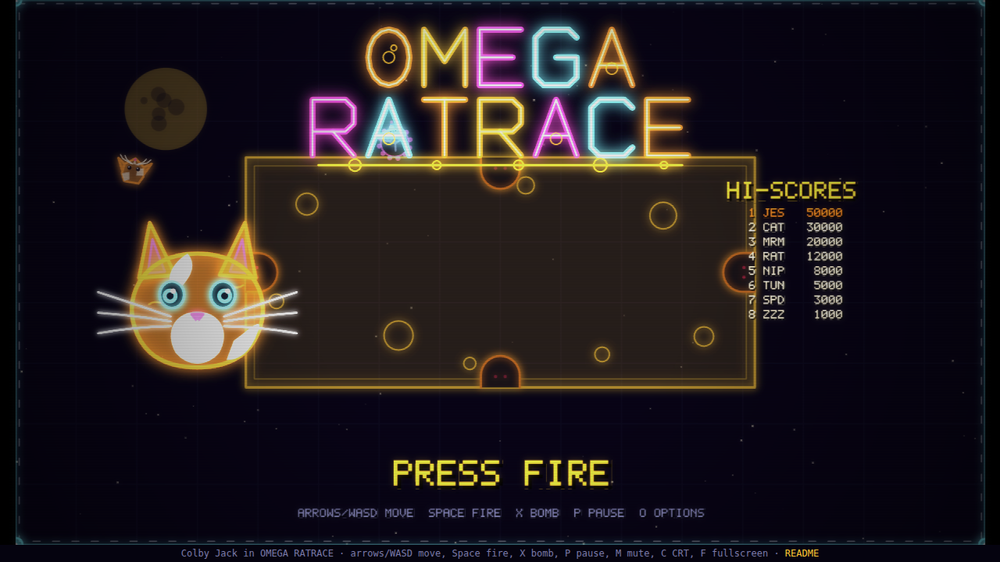
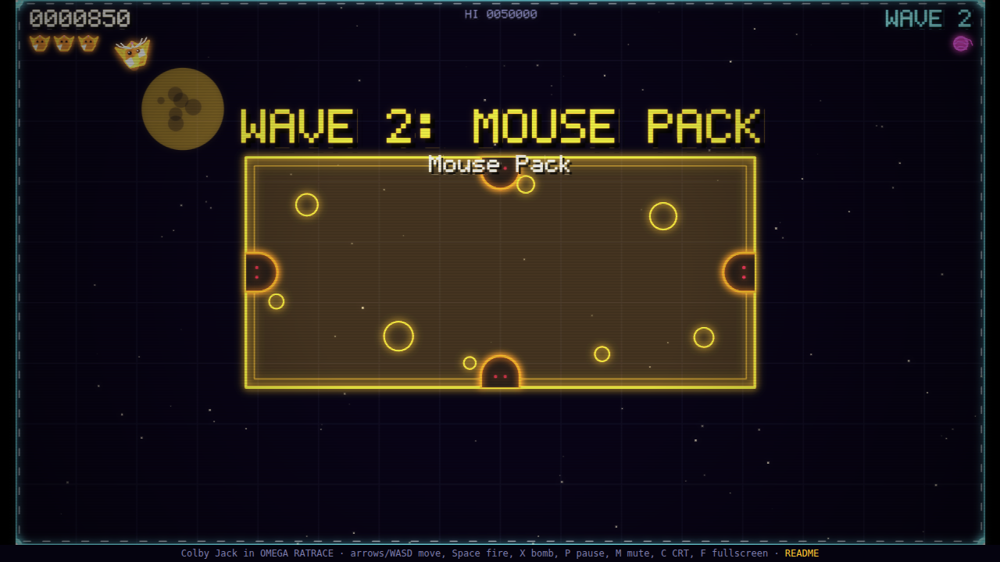
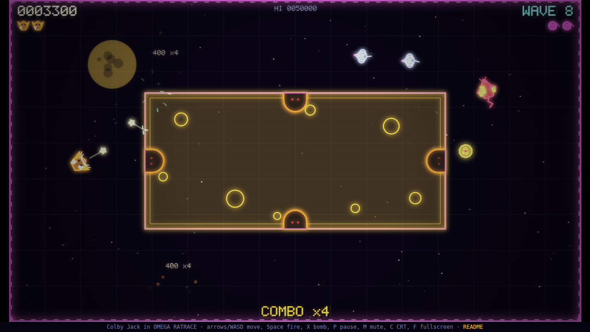
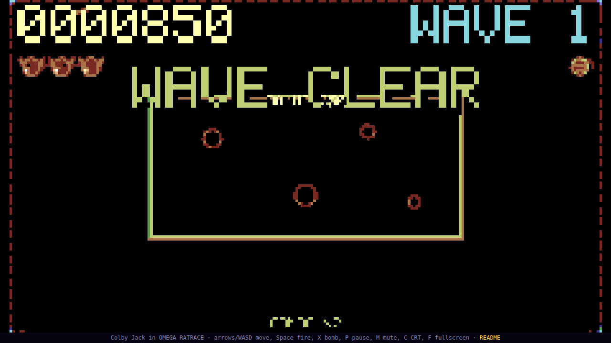
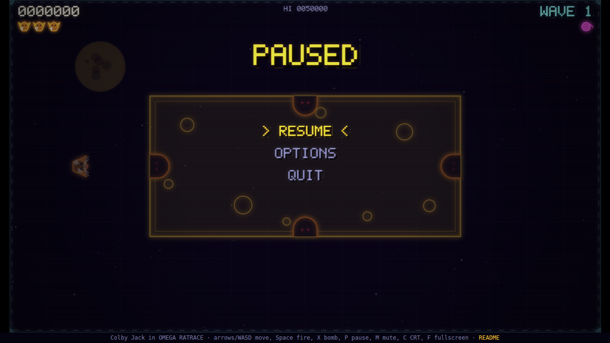
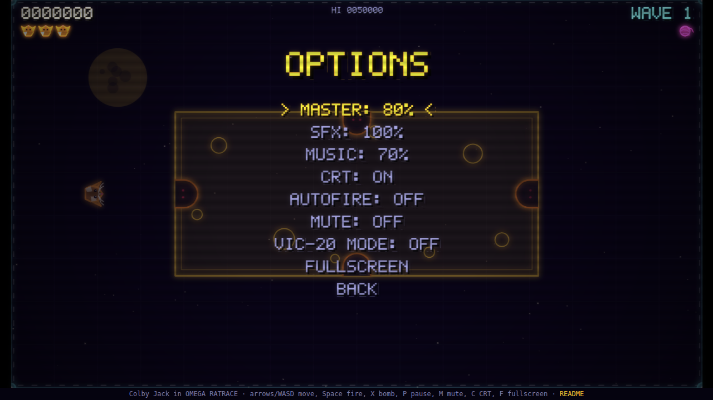
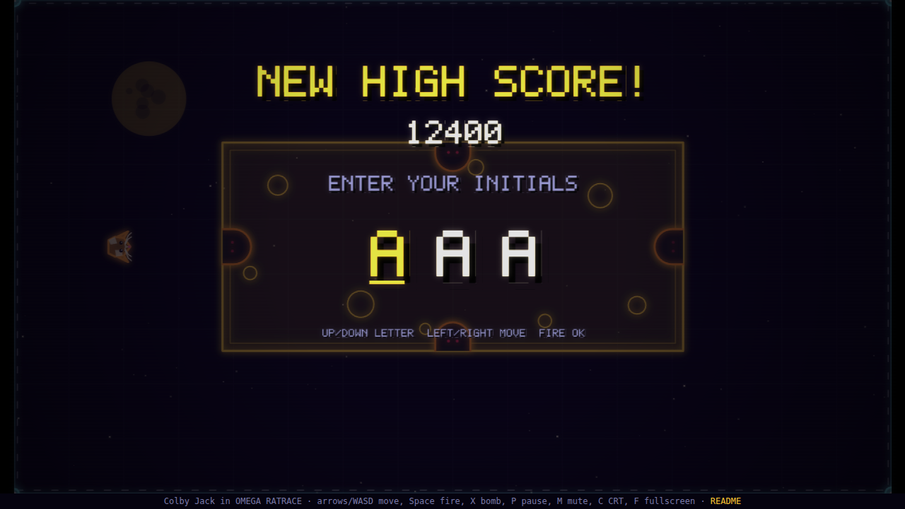
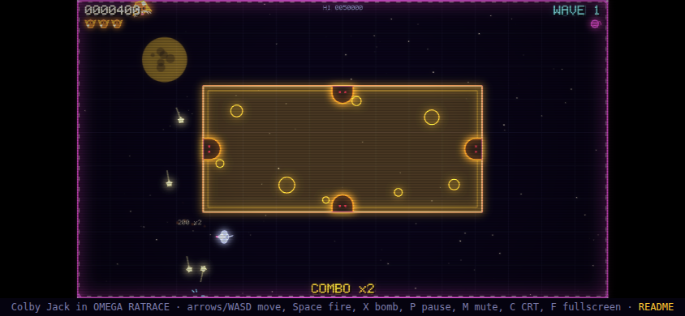
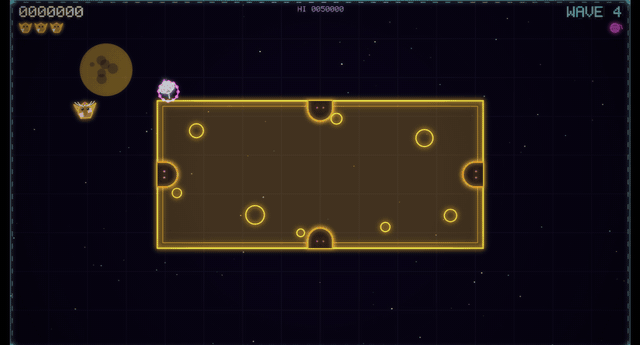

About
Fly Colby around the ring corridor that surrounds the central Mouse Hole. Thrust with Newtonian inertia, bounce off the force-field walls without taking damage, and ricochet hairballs off them. Rats and mice launch from the Mouse Hole. The Death Rat hunts you if you linger.
This is a remake inspired by Omega Race. It uses no original assets from the 1981 game. All art is drawn in code, all sound is synthesized, and the game has no runtime dependencies.
Screenshots









Controls
| Action | Keys |
|---|---|
| Rotate | ← → or A D |
| Thrust | ↑ or W |
| Fire | Space or Z |
| Yarn bomb | X or Shift |
| Pause | P or Esc |
| Mute / CRT / Fullscreen | M / C / F |
| VIC-20 retro mode | V |
Gamepad and touch controls work too. Touch devices get an on-screen stick and FIRE and BOMB buttons.
Full rules, enemies and scoring are in docs/HOW-TO-PLAY.md. Press V for VIC-20 mode; ?vic=1 starts in it.
Quick rules
- You start with 3 lives and 1 yarn bomb. Tuna pickups give bombs, up to 3.
- Clear each wave to earn a bonus of wave number × 250. Waves 1 to 24 are hand-authored; after that they are generated and keep escalating.
- Kills chain within 2 seconds. The combo multiplier climbs to ×5.
- Extra lives at 10,000 and 30,000 points, then every 30,000.
- The top 8 scores are kept in your browser.
Run it yourself
Needs Node 22 or newer. No install step.
npm start serves the game at http://localhost:4796. npm test runs the test suite. npm run build makes the minified bundle and the single-file HTML.